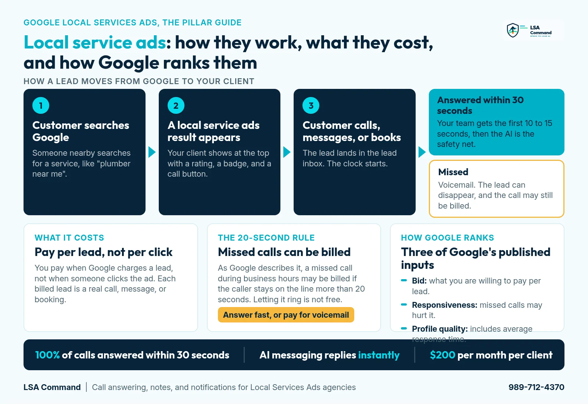
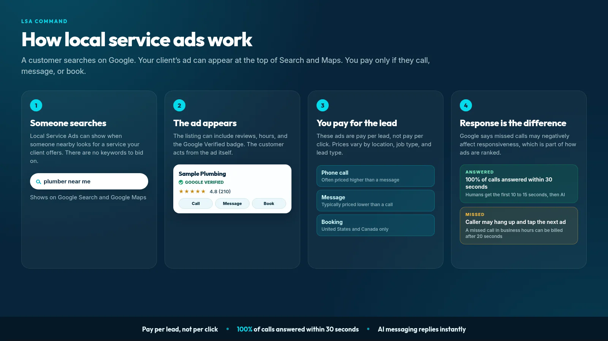
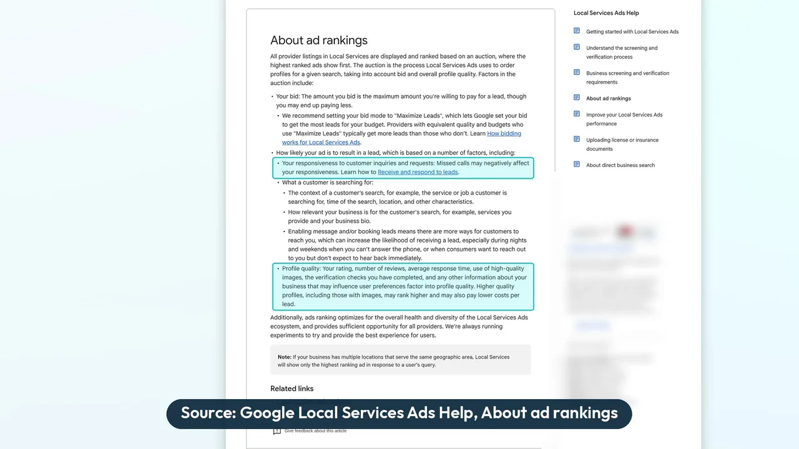

What are local service ads?
If you have searched Google for a plumber or an electrician, you have probably seen local service ads: the business listings at the top of the results, each with a star rating, a review count, and a way to call right from the ad. Google's official name for the product is Local Services Ads (plural "Services"). Most people in the industry shorten it to Google LSA or LSA ads.
Local service ads are pay-per-lead ads for eligible local service businesses that can appear at the top of Google Search and Google Maps. Customers call, message, or book directly from the ad, and the business pays for leads instead of clicks.
There are no keywords to pick. Google matches the ad to a search based on the services the business offers and the area it serves, as explained in Google's Local Services Ads overview.
According to Google's product page and help documentation, a typical ad shows:
- The business name
- A Google tracking phone number
- The business location
- Star rating and number of reviews
- Business hours
- The Google Verified badge, once the business has earned it
The trade is simple. Google sends the lead, and the business has to respond. The rest of this guide covers both halves: how the ads work, and how agencies get 100% of calls answered within 30 seconds.
This 9-minute video shows what happens after the lead arrives, including the calls that never get answered.

Key moments
- 0:00 The call that disappears
- 0:47 What Google says about responsiveness
- 1:39 Every call answered, every message replied to
- 2:28 1. Notes written onto the lead inside Google LSA
- 3:35 2. Instant, agency-branded text and email notifications
- 4:26 3. High-value leads identified
- 4:58 4. The weekly lead summary
- 5:38 5. The Google survey, filled on every lead
- 6:20 6. Robocall blocking
- 6:48 7. Calls answered within 30 seconds, AI messaging replies instantly
- 7:55 8. Price and next step
Want the full walkthrough and transcript? Read what happens when a lead calls and nobody answers.
Managing Local Services Ads for clients? LSA Command gets 100% of calls answered within 30 seconds for $200 per month per client, voice AI included, no setup fee. Built for agencies only. The 30-min call includes an LSA account audit of one client account. Book a 30-min call with our team, or call or text 989-712-4370.
How Local Services Ads work

From sign-up to first lead, every account follows the same basic path:
- Confirm eligibility. Check that the business category is supported in its country and market.
- Complete screening and verification. Google checks the business before it can earn the badge. What Google asks for depends on the category and location.
- Set services and service area. Choose the job types the business wants and the places it serves. This replaces keyword targeting.
- Set budget and bidding. Pick an average weekly budget and a bidding mode.
- Go live. The ad becomes eligible to show on Google Search and Google Maps.
- Receive leads. Customers call, message, or book from the ad.
- Respond. Answer the call or reply to the message. Responsiveness is one of the things Google looks at when it ranks ads.
- Manage billing. Review charged leads, give feedback on lead quality, and adjust budget.
For click-by-click instructions, see how to set up Google Local Services Ads. If you want to see how an agency connects a client account to LSA Command, the setup page walks through it.
Eligibility, categories, and where the ads show
Local Services Ads are available only for certain service categories in certain countries. Google's getting-started page lists the current US categories, and the list extends well beyond home services.
Requirements vary by category and location. According to Google's screening and verification page, they may include:
- License checks
- Insurance checks
- Background checks
- Business registration checks
- A minimum number of reviews
Major home service categories include plumbers, HVAC contractors, electricians, roofers, and pool contractors. Professional services such as lawyers and real estate agents are eligible too. For a fuller breakdown, see our guide to Local Services Ads categories.
Where the ads show. The ads can appear at the top of Google Search and in Google Maps for searches that match the business's services and service area, per Google's overview.
Pre-badge ads. In some verticals, a business can start showing before verification is complete. These pre-badge listings can appear below badged providers. Google's getting-started page says pre-badge ads are not available for garage door services, health care verticals, and locksmiths.
Stuck in verification? Start with what to do when an account is not eligible or fails verification and how the background check works.
The Google Verified badge (formerly Google Guaranteed and Google Screened)
If you came here searching for Google Guaranteed or Google Screened, those were the badge names for years. Google has since simplified them into one badge: Google Verified.
Here is what changed, according to Google's badge announcement:
- One badge. Google Verified replaces the earlier badge names.
- Automatic for existing advertisers. Businesses that had already completed verification received the new badge automatically.
- The Money Back Guarantee is discontinued. The reimbursement program tied to the old Google Guarantee badge has ended. Eligible reimbursement requests had to be for services booked before December 7, 2025.
- No ranking impact. Google states that the badge change does not affect Local Services Ads ranking.
For clients, the practical point is this: the badge tells customers the business passed Google's checks. It is no longer a promise from Google to refund a job that goes badly. More detail is in our Google Verified badge guide.
What local service ads cost (pay-per-lead)
You pay for valid leads, not clicks. There is no single price. Google's page on how leads and charges work says lead prices may vary by location, job type, lead type, and bidding mode.
That is why this page does not quote an average cost per lead. Third-party averages blend very different markets and job types. The useful number is the one inside your client's own account.
Weekly budget and monthly max
Per the same Google page:
- You set an average weekly budget.
- In a given week, you can spend more than that average.
- You will not spend more than the monthly max, which is the weekly budget multiplied by the average number of weeks in a month.
- Once the monthly max is reached, the ad stops showing unless you raise the budget.
Lead type matters too. Google says message leads are typically priced lower than the corresponding phone lead, though not always. Booking leads are only available in the United States and Canada.
The 20-second missed-call rule
Google's page on how leads work says a missed call during business hours can be billed as a lead if the customer stays on the line for more than 20 seconds.
Two details matter:
- If the account uses an IVR (a phone menu) that requires a key press, the timer starts after the key press.
- A short missed call under 20 seconds is not billed on ring time.
In plain terms, a client can pay for a call that went to voicemail. Our guide to LSA missed call charges covers the rule in detail, and the missed call calculator estimates what it costs a specific account.
More on cost: what Google Local Services Ads cost, how billing works, budget and bidding settings, and the LSA budget calculator.
Lead types: calls, messages, and bookings
LSA leads arrive in three ways:
- Phone calls. The customer taps the ad and calls the Google tracking number, which forwards to the business.
- Messages. The customer sends a written request from the ad. Google routes messages through proxy numbers and email aliases, so the business and the customer do not see each other's direct contact details by default.
- Bookings. The customer books a time directly from the ad. Booking leads are available only in the United States and Canada.
Google can send new-lead notifications by email, by text (US only), or both.
One billing rule protects you from double charges. According to Google's lead documentation, follow-up contact from the same customer within 15 days, from the same number or email, is not charged again.
Message leads are easy to neglect because they do not ring. They still expect a fast reply. See how LSA Command handles message leads, how to respond to Google LSA message leads, and how LSA lead notifications work.
How Google ranks local service ads
Google does not publish a formula, but it does publish the inputs. According to Google's ranking page, rankings are based on an auction that takes into account your bid and your overall profile quality.

The factors Google lists:
- Your bid. For legacy bidding, Maximize Leads is Google's recommended mode.
- How likely the ad is to result in a lead. This includes responsiveness.
- Search context. The service being searched, the time, and the location.
- Relevance. How well the services and business bio match the search.
- Lead types enabled. Whether message leads, booking leads, or both are turned on.
- Profile quality. Rating, number of reviews, average response time, high-quality images, verification checks completed, and other business information.
On responsiveness, Google's wording is direct:
Missed calls may negatively affect your responsiveness.
Note the word "may." Google does not say every missed call lowers rank, and nobody outside Google knows how the factors are weighted. But answering is one of the few ranking inputs you fully control.
Three more points from the same page:
- Higher quality profiles, including those with images, may rank higher and may also pay lower costs per lead.
- If a business has multiple locations serving the same area, only the highest ranking ad shows.
- Location matters as part of search context and through the service area you set. Google does not publish a separate distance score.
Next steps: how to rank higher in Google Local Services Ads, whether there is a Google LSA phone response score, reviews, service area settings, why ads are not showing, and running multiple locations.
Local Services Ads vs Google Search ads vs the local map pack
These three placements can appear on the same results page, and clients often confuse them. They work differently.
| Local Services Ads | Google Search ads | Local map pack | |
|---|---|---|---|
| What you pay for | Valid leads (calls, messages, bookings) | Clicks | Nothing. It is an organic placement. |
| Targeting | No keywords. Service categories and service area. | Keywords, locations, and audiences you choose | Organic, based on the Google Business Profile |
| What the customer does | Calls, messages, or books from the ad | Clicks through to a website or landing page, or calls from a call asset | Calls, gets directions, or visits the website from the profile |
| Trust signal | Google Verified badge (once earned), rating, and reviews | Ad copy and assets. No verification badge. | Rating and reviews on the Business Profile |
| Where it appears | Top of Google Search and in Google Maps | Google Search results, labeled as sponsored | The map results block in Google Search, and Google Maps |
| If nobody answers | A missed call may be billed after 20 seconds during business hours, and may affect responsiveness | You already paid for the click | No lead fee, but the customer may still move on |
The missed-call billing and responsiveness notes in this table come from Google's page on how leads work and Google's page on ad rankings.
Most home service businesses do best using these together, not choosing one. For the full comparison, read Local Services Ads vs Google Ads or the agency version, LSA vs Google Ads for agencies.
Running Local Services Ads for clients? See how agencies get 100% of calls answered within 30 seconds. Across three pool contractors, leads answered in under 30 seconds rose from 28% to 100% (December 2025 to April 23, 2026). See the case studies. Book a 30-min call with our team or call or text 989-712-4370.
The move into Google Ads as Performance Max campaigns with pay-per-lead goals
The biggest change of 2026: Google is migrating Local Services Ads into Google Ads as a specialized Performance Max campaign type with pay-per-lead goals. The details below come from Google's migration page.
What does not change, per Google:
- You still pay per lead.
- The ads still show only on Google Search and Google Maps.
- They are still keywordless.
- Targeting is still based on service categories and service areas.
Google's timeline:
- August 2026: first phase, for select US home and storefront advertisers in plumbing, HVAC, electrical, appliance repair, house cleaning, lawn care, roofing, pest control, and moving.
- Late 2026: broader groups, including service-area businesses without storefronts and accounts with custom bidding or booking.
- 2027: non-US accounts and remaining categories.
What does change:
- Historical campaign performance reports do not carry over. Leads history does. Export old reports before an account moves.
- Manual bidding and industry-level Target CPA are being deprecated in the migration. Pay-per-lead campaigns use automated bidding.
Agencies should plan for this account by account. Start with what the Performance Max move means, then the agency migration guide, the migration checklist, and our comparison of Maximize Conversions vs Target CPA.
Lead quality, feedback, and credits
Not every lead is a good one. Here is how Google says it handles that, per its pages on leads and charges and lead credits:
- Assessment at contact. Google first assesses each lead when it comes in. Invalid or low-quality leads may not be charged.
- Reassessment. Charged leads may be reassessed, and Google may issue credits automatically if a lead is later determined to be low quality.
- Your feedback. If you believe a lead is poor quality, you can fill out the Feedback Survey for that lead. Google says it will do its best to send more of the leads you want, and that it may also occasionally credit leads reported as poor quality through the survey.
Per Google's lead credits page, each lead carries one of four charge statuses: Charged, Not charged, In review, or Credited.
Per Google's lead credits page, lead credits are not available for health care verticals, tax specialists, or advertisers in EMEA.
For accounts already on Performance Max with pay-per-lead goals, Google Ads Help says manual lead disputes are no longer supported and invalid leads are automatically detected. Google also says the "Rate this lead" survey provides feedback and can result in a reimbursement, which is reflected under Charge Status.
The honest summary: you can give Google consistent, accurate feedback on every lead. Whether a lead is credited is Google's decision. Any agency or tool that promises credits is promising something it does not control.
Go deeper: LSA lead disputes, how to dispute Google LSA leads, lead disputes for agencies, what to do about bad Google LSA leads, and the lead dispute helper.
Managing Local Services Ads for multiple clients
Running one account is manageable. Running twenty is a different job. A local service ads agency has to handle the same lead-by-lead work across every client, without letting anything slip.
The pieces of local service ads management at agency scale:
- Account access. Use a manager account so you can work across client accounts without sharing logins.
- Multi-account tooling. See what to look for in multi-account LSA software.
- White label. Clients should see your brand, not a vendor's. See white label Local Services Ads for agencies.
- Reporting. Clients want to know which leads were real and which became jobs. Compare LSA reporting software or start with the free client report template.
- CRM. Leads that stay inside Google's inbox get lost. See LSA CRM integration and the Google LSA dashboard and the agency layer on top.
- Multiple locations. Because only the highest ranking ad shows when locations overlap, multi-location accounts need planned service areas.
- Pricing. See how agencies price LSA management, and test your numbers in the agency margin calculator.
To check the state of a client account quickly, run the LSA account health grader. For how LSA Command fits into an agency's service, see the agencies page.
Why response speed decides what a lead is worth
Agencies using LSA Command get 100% of calls answered within 30 seconds. Here is what happens without that.
A homeowner calls from the ad on a weeknight. The office is closed, or the crew is on a job. The call rings out to voicemail. The homeowner hangs up and taps the next ad.
Three things can follow from that one call:
- The client may pay for it. A missed call during business hours can be billed if the customer stays on the line for more than 20 seconds, per Google's lead rules.
- It may count against the account. Google says missed calls may negatively affect responsiveness, which is part of how ads are ranked.
- The job goes elsewhere. The customer still needs the work done.
This is not rare. Invoca found that 27% of calls to home services businesses go unanswered. Separately, ServiceTitan reported that in its data, 65.9% of abandoned LSA calls lasted at least 20 seconds.
The video near the top of this page walks through the problem and the fix.
For the full story, read the companion post: what happens when a Google LSA lead calls and nobody answers. For the fix on its own, see LSA AI call answering.
How LSA Command helps
LSA Command is software for agencies that manage Local Services Ads. It works on every lead in every client account, under your agency's brand. Built for agencies only. We don't sell to business owners directly. Here is what it does, in the same order as the video.
1. Notes written onto the lead inside Google LSA
After each call or message, LSA Command writes notes directly onto the lead inside Google LSA:
- What the customer needs
- How serious they are
- The caller's real phone number
- Their address
The phone number matters more than it sounds. The number on an LSA lead is often a forwarding number with an extension, not the caller's own number. LSA Command replaces it with the caller's real number. The address is pulled from the conversation and goes into the Google LSA notes and into the notification.
Your client opens the lead in Google and the context is already there.

2. Instant, agency-branded text and email notifications
Each real lead triggers a notification by text, by email, or both. It carries your agency's logo and name, and includes:
- The caller's real number and address
- What they need
- A short AI summary
- The full transcript
- A way for the client to take over an active message lead
Spam is filtered before a notification is sent, so clients are not interrupted by junk.
3. High-value leads identified
Every lead is rated high value or low value, with the reason stated. You set the rules by service type and service area, so a full system replacement in the core service area is treated differently from a small job outside it.
4. The weekly lead summary
Each week, clients receive a lead summary under your agency's name, with every lead rated high or low value. Clients can mark which leads became booked jobs, which gives you real outcome data for reporting.
5. The Google survey, filled on every lead
LSA Command fills out Google's survey on every lead automatically, using rules your agency sets. That gives Google consistent feedback without anyone doing it by hand. What Google does with that feedback is up to Google.
6. Robocall blocking
Robocalls are screened at the carrier level. The AI also catches recorded messages and robotic voices that slip through. Blocked calls are tagged and logged, and they do not trigger a notification.

7. Calls answered within 30 seconds, AI messaging replies instantly
The client's team still gets the first ring. Humans get the first 10 to 15 seconds. If nobody has picked up, the call transfers to the voice AI, so 100% of calls are answered within 30 seconds.

For message leads, AI messaging replies instantly, right inside Google's LSA platform.
The AI is a safety net for after hours, busy days, and every moment nobody else can pick up. On a call, it can:
- Find out what the caller needs
- Get the address
- Book the job if the caller is ready
- Warm-transfer the caller to the team
Booked calls marked inside Google's LSA platform
This step is not in the video. When the AI books an appointment on a Google LSA call, LSA Command's terminal bot fills out the Lead Summary directly inside Google's own LSA platform:
- Lead Status is set to Booked
- Customer Name and Location are filled in
- The job and the appointment are written into Additional Details
No copy-pasting. Your client opens Google and the booking is already recorded. The fields are Google's own: Lead Status, Customer Name, Location, and Additional Details.

8. Price and next step
LSA Command costs $200 per month per client. Voice AI is included and there is no setup fee. Google's lead charges are separate and billed by Google. Setup usually takes one call. Book a 30-min call with our team, or call or text 989-712-4370.
Black Friday offer for agencies. Get 5 client locations live on LSA Command by December 15, 2026, and the first month is free on every location you add before December 15. Ends December 15, 2026. Book a 30-min call with our team
See the full feature list on what you get, the details on pricing and in LSA Command pricing explained, and anonymized examples in our case studies.
Results from Local Services Ads accounts
Across three pool contractors, the average share of Local Services Ads leads answered in under 30 seconds went from 28% in December 2025 to 100% by April 23, 2026. Combined monthly leads went from 38 in December 2025 to 147 in March 2026, a 3.9x increase, and average lead quality went from 2.43 to 3.87, a 59% lift.
Read the volume number with care. Pool demand is seasonal, and December is a slow month. Measured from November instead, combined leads still grew from 53 to 147, a 2.8x increase. Response rate and lead quality do not rise on their own in spring.
These figures come from three published, anonymized case studies. Monthly lead volume is a full-month comparison, December 2025 to March 2026. Response rates and lead quality scores run from December 2025 to April 23, 2026 (month to date). They are the published tables as of April 23, 2026, not a current snapshot.
| Account | Answered in under 30 seconds | Monthly leads | Lead quality |
|---|---|---|---|
| Three pool contractors (response and quality averaged, leads combined) | 28% to 100% | 38 to 147 (3.9x) | 2.43 to 3.87 (59% lift) |
| A Bay Area pool contractor | 18% to 100% | 17 to 56 (3.3x) | 2.35 to 4.13 (75% lift) |
| A pool and spa contractor | 27% to 100% | 11 to 49 (4.5x) | 2.45 to 4.19 (71% lift) |
| A pool contractor (also ran a separate rapid lead-engagement tool) | 40% to 100% | 10 to 42 | 2.50 to 3.30 (32% lift) |
Under-30-second response and lead quality: December 2025 to April 23, 2026, month to date. Monthly leads: December 2025 to March 2026, the last full month in the tables. The 18% and 27% starting rates are the published, rounded December figures. One account also used a separate rapid lead-engagement tool, so its volume change cannot be credited to LSA Command alone, and its leads are included in the combined volume.
See all three month-by-month tables on the case studies page.
See it on one of your own client accounts. The 30-min call includes an LSA account audit of one client account. We will show you how every call gets answered within 30 seconds and what your clients would see under your brand. Built for agencies only. We don't sell to business owners directly.
Book a 30-min call with our team or call or text 989-712-4370.
Industry guides
Requirements, job types, and lead patterns differ by trade. Pick yours:
- Local Services Ads for HVAC contractors
- Google local service ads for plumbers
- Local Services Ads for roofers
- Local Services Ads for electricians
- Local Services Ads for pool contractors
- Local Services Ads for lawyers
- Local Services Ads for real estate agents
See all industries.
Guides in this hub
Getting started
- How to set up Google Local Services Ads
- Which categories are eligible
- Fixing "not eligible" and verification problems
- How the background check works
- The Google Verified badge explained
- Are Google Local Services Ads worth it?
Cost and billing
- What Google Local Services Ads cost
- How billing and charges work
- Budget and bidding settings
- Missed call charges and the 20-second rule
- How to pause Local Services Ads
Ranking and the profile
- How to rank higher in Local Services Ads
- The optimization checklist
- Why your ads are not showing
- Reviews and your LSA profile
- Setting the right service area
- Running multiple locations
Leads, response, and credits
- What happens when a lead calls and nobody answers
- Is there a Google LSA phone response score?
- The Google LSA dashboard and the agency layer on top
- AI call answering for LSA
- Handling message leads
- How to respond to message leads
- How lead notifications work
- Lead disputes and feedback
- How to dispute Google LSA leads
- Lead disputes for agencies
- What to do about bad leads
- How to reach Google Local Services Ads support
The move to Google Ads
- Local Services Ads and Performance Max: what is changing
- The migration guide for agencies
- Migration checklist
- Maximize Conversions vs Target CPA
- Local Services Ads vs Google Ads
- LSA vs Google Ads for agencies
For agencies
- LSA Command for agencies
- What you get
- Pricing
- LSA Command pricing explained
- Local Services Ads software for agencies
- Setting up a manager account
- Multi-account LSA software
- White label Local Services Ads
- LSA reporting software
- CRM integration
- How to price LSA management
- The Local Services Ads API
- The Local Services Ads partner program
- Client report template
- Case studies
Tools
- LSA budget calculator
- Missed call calculator
- Lead dispute helper
- Agency margin calculator
- Account health grader
- All free LSA tools
Frequently asked questions
What are local service ads?
Local service ads, officially called Local Services Ads, are pay-per-lead ads from Google for eligible local service businesses. They can appear at the top of Google Search and Google Maps, and customers can call, message, or book directly from the ad. There are no keywords. Google matches ads to searches by service type and service area, as described in Google's overview.
How do local service ads work?
A business confirms it is in an eligible category, completes Google's screening and verification, chooses its services and service area, and sets a weekly budget and bidding mode. Once live, the ad can show for matching local searches. The business pays for valid leads, and how well it responds is one of the things Google considers when ranking ads.
How much do local service ads cost?
There is no fixed price. Google says lead prices may vary by location, job type, lead type, and bidding mode. You set an average weekly budget, and you will not be charged more than the monthly max, which is the weekly budget multiplied by the average number of weeks in a month. The best guide to cost is the lead price history in the account itself.
What is the difference between local service ads and Google Ads?
With Local Services Ads you pay per lead, there are no keywords, and the ad sends customers straight to a call, message, or booking. With Google Search ads you pay per click, you choose keywords, and the click usually goes to a website. Local Services Ads can also show the Google Verified badge. Google is now moving Local Services Ads into the Google Ads platform as Performance Max campaigns with pay-per-lead goals, but they remain a separate, pay-per-lead campaign type.
What is the Google Verified badge?
Google Verified is the single badge shown on Local Services Ads for businesses that have completed Google's verification. It replaced the older Google Guaranteed and Google Screened badges. Google says existing verified advertisers received it automatically, the change does not affect ranking, and the Money Back Guarantee tied to the old Google Guarantee badge has been discontinued.
Do missed calls hurt Local Services Ads ranking?
They can. Google's ranking page lists responsiveness as part of how likely an ad is to result in a lead, and states that missed calls may negatively affect your responsiveness. Google does not publish how much weight this carries, so nobody can say exactly how much one missed call matters.
Does Google charge for a missed Local Services Ads call?
It can. Google's page on how leads work says a missed call during business hours can be billed as a lead if the customer stays on the line for more than 20 seconds. If the account uses an IVR that requires a key press, the timer starts after the key press. A short missed call under 20 seconds is not billed on ring time.
What categories are eligible?
Eligibility depends on the category and the country. In the US, the list includes home services such as plumbing, HVAC, electrical, roofing, and pool work, plus professional services such as law and real estate, and more. Google keeps the current list on its getting-started page. Requirements such as licenses, insurance, and background checks vary by category and location.
Are Local Services Ads moving to Performance Max?
Yes. Google is migrating Local Services Ads into Google Ads as a specialized Performance Max campaign type with pay-per-lead goals. Per Google, the ads stay pay-per-lead, keywordless, and limited to Search and Maps. The first phase began in August 2026 for select US advertisers, with broader groups in late 2026 and non-US accounts and remaining categories in 2027.
How do lead credits work?
Google assesses each lead when it arrives and may not charge for invalid or low-quality leads. Charged leads may be reassessed and credited automatically. You can also submit the Feedback Survey on a lead, and Google says it may occasionally credit leads reported as poor quality. Credits are Google's decision and are not available for health care verticals, tax specialists, or advertisers in EMEA.
Does the AI answer every call before my client's team can?
No. With LSA Command, the client's team still gets the first ring. Humans get the first 10 to 15 seconds. Only if nobody picks up does the call transfer to the voice AI, so every call is answered within 30 seconds. The AI is a safety net for after hours, busy days, and any moment nobody else can pick up.
How much does LSA Command cost?
LSA Command costs $200 per month per client. Voice AI is included and there is no setup fee. Google's lead charges are separate and billed by Google. Setup usually takes one call. To see it on a client account, book a 30-min call with our team or call or text 989-712-4370.
Does LSA Command mark booked leads inside Google?
Yes. When the AI books an appointment on a Google LSA call, LSA Command sets Lead Status to Booked, fills in Customer Name and Location, and writes the job and appointment into Additional Details, inside Google's own LSA platform.
Manage Local Services Ads for clients? See 100% of calls answered within 30 seconds on one of your own client accounts. $200 per month per client, voice AI included, no setup fee. Built for agencies only.
Book a 30-min call with our team or call or text 989-712-4370.